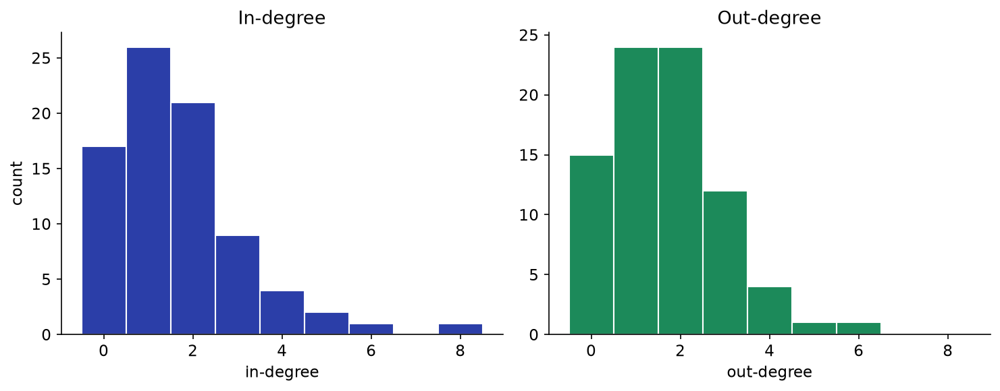
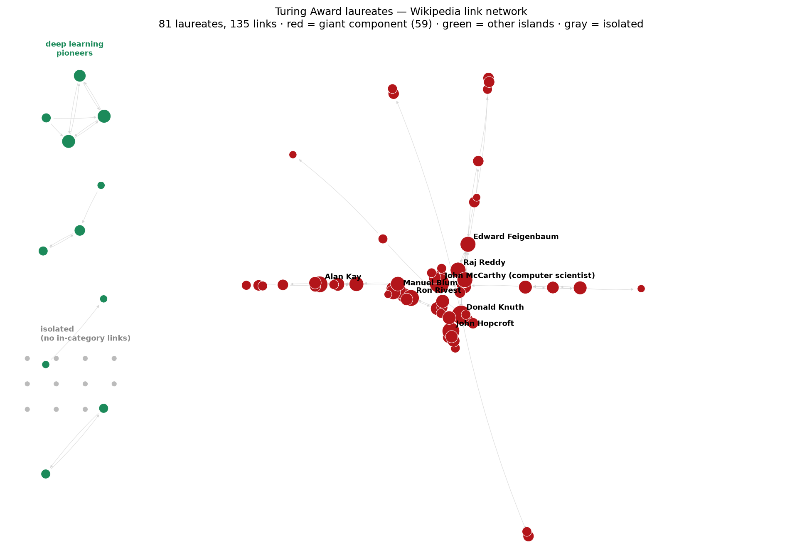

Bonus — do famous engineers cite each other like superheroes do?
What we asked
Week 1 was about the Marvel superheroes network — a dense little universe where Spider-Man alone is linked to by a third of the other 302 characters. That got us wondering: is that kind of runaway hub a property of fictional celebrity specifically, or would we see the same shape in a network of real, famous people? As a side quest (not this week's actual post), we picked a real-world category with the same clean, closed structure as "Marvel Comics superheroes" — an actual award, not a vague notion of fame — and built the same kind of network from scratch.
What we did
Unlike week 1, there's no frozen snapshot for this — so we built the network ourselves,
live, via the Wikipedia API: fetched every page in the category, pulled each one's raw
wikitext, and extracted [[Page name]] links exactly as the course describes
the Marvel network being harvested. An edge A → B exists when laureate A's
Wikipedia article links to laureate B's.
The headline finding: no Spider-Man here
In the Marvel network, the top in-degree was 106 (Spider-Man, out of 302 possible links — about a third of the whole network). Here, the single most-cited laureate is Donald Knuth, and his in-degree is 8 — out of 80 possible. Average in-degree here is 1.67, versus 5.89 for the Marvel network, on a category almost four times smaller.

Real, famous, decorated computer scientists cite each other in Wikipedia's prose far less densely than fictional superheroes cite each other in their plot summaries. Our read: Marvel's link density comes from a narrative device — shared universes, crossovers, and team-ups are the entire point of the source material, so articles have to cross-reference each other to explain the story. Biographical Wikipedia articles about real scientists have no equivalent narrative pressure to mention other laureates by name, even when the underlying professional relationships (advisor, co-author, colleague) are just as real or realer.
Who's cited, who cites — and it's a much smaller cast
| Rank | Most cited (in-degree) | Cites others most (out-degree) |
|---|---|---|
| 1 | Donald Knuth — 8 | John McCarthy — 6 |
| 2 | John McCarthy — 6 | Ron Rivest — 5 |
| 3 | John Hopcroft — 5 | Manuel Blum — 4 |
| 4 | Alan Kay — 5 | Edward Feigenbaum — 4 |
| 5 | Manuel Blum — 4 | John Hopcroft — 4 |
Unlike week 1's split casts, several names appear on both leaderboards here (McCarthy, Hopcroft, Manuel Blum) — with only 81 nodes and 135 edges, the same handful of foundational, early-era figures (McCarthy essentially named the field of AI) end up doing double duty as both hubs and connectors, because there simply isn't room for the in- and out-degree elites to be two disjoint crowds the way they were among 303 Marvel characters.
The islands: coherent research communities, not random gaps
Only 73% of laureates sit in the giant component — notably less connected than Marvel's 91%. The disconnected pieces are legible as real intellectual communities:
- Deep learning pioneers — Geoffrey Hinton, Yoshua Bengio, Yann LeCun, and Andrew Yao form their own 4-node island, densely linked to each other and to no one else in the category.
- Unix creators — Ken Thompson, Dennis Ritchie, and Fernando Corbató, another self-contained trio.
- Compiler optimization — John Cocke and Frances Allen, longtime IBM collaborators, linked only to each other.
- Reinforcement learning — Andrew Barto and Richard Sutton, co-authors of the field's foundational textbook.
The isolates: giants who just don't get name-dropped
11 laureates have zero links in or out within the category: Charles Bachman, Stephen Cook, Jack Dongarra, Jim Gray, Richard Hamming, William Kahan, Robert Metcalfe, Robin Milner, Judea Pearl, Leslie Valiant, and James H. Wilkinson. Unlike Marvel's isolates (mostly genuinely obscure one-off characters), several of these are towering, extremely famous figures in their sub-fields (Hamming, Cook, Pearl) — they're just not the kind of figure whose name gets casually dropped in another laureate's biography. Fame and Wikipedia link-degree measure different things once you leave fiction behind.
The full picture

What surprised us
- The complete absence of a Spider-Man-scale hub — even the most-cited laureate (Knuth, 8) reaches barely a tenth of the category, versus a third for Spider-Man.
- Small components here are thematically coherent research communities, not random debris — a genuinely nice structural signal about how the field is organized.
- Being isolated in this network says nothing about being unimportant — several isolates are giants of the field. Link-degree here tracks "gets name-dropped in others' bios," not "is famous."
A caveat on the crawl
We used action=parse + wikitext and a simple [[...]] regex rather
than the cleaner prop=links API endpoint, to mirror how the course said the
Marvel network's edges were harvested. This will pick up some links inside infoboxes,
"See also" sections, and citation templates that a stricter parse might exclude, and it
doesn't resolve redirects (so a link via an alternate name/spelling could be missed) —
worth keeping in mind before reading too much into any single edge.
Full crawl + analysis code: analysis/bonus_turing/ in the repo.
← Back to all posts